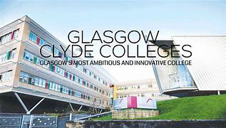
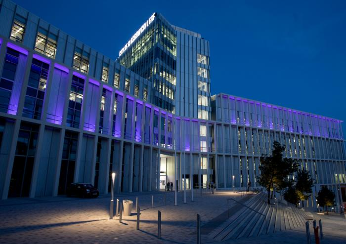
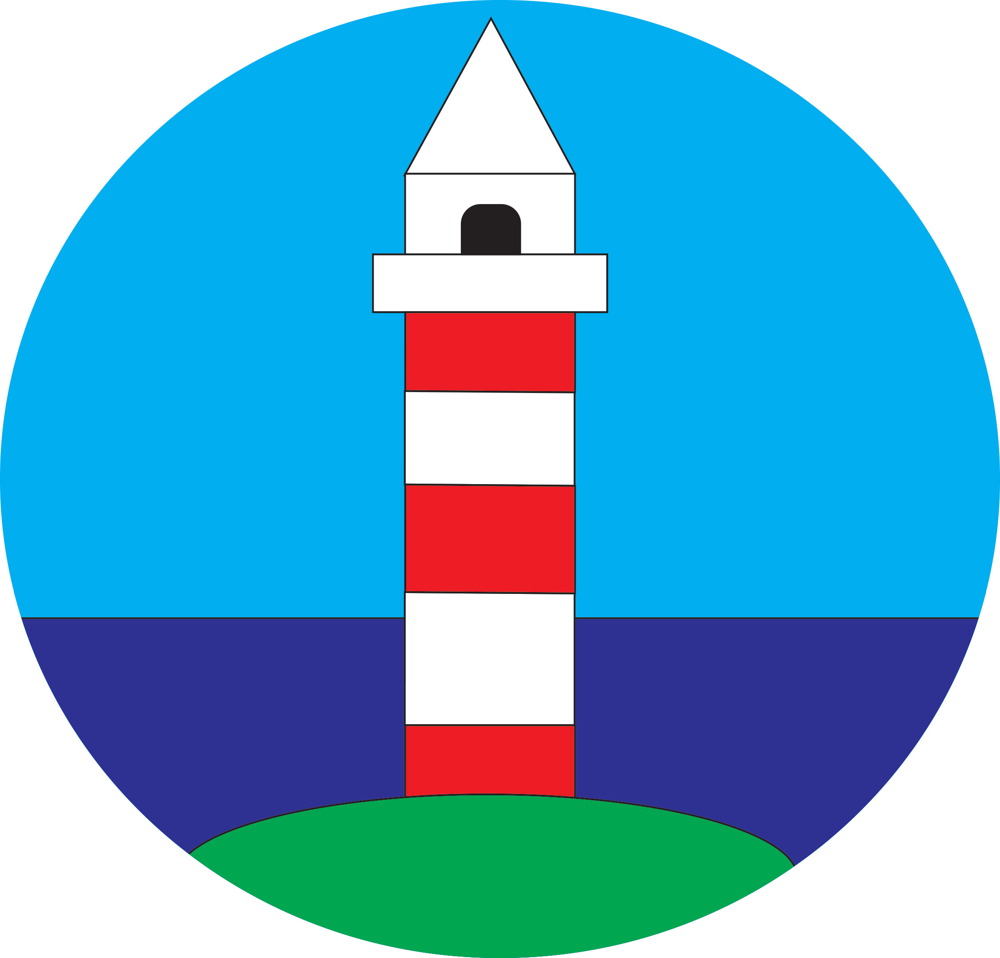
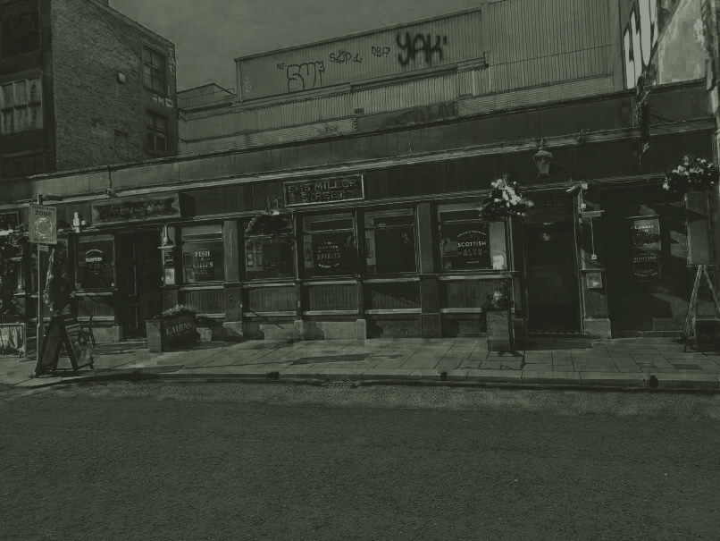

i first went to Glasgow Cylde College it was there that i learnt Computing fundementails where i did website design and a little bit of games development thats when i found out that i like the coding side of Computing
after passing that class i went to the City of Glasgow College and thats where im learning Digital Design it has been a good and the college is really it has cafes and places to buy things from
And a lot more those are the main ones and they have been a lot of fun to learn as it will help me get into the course that i want to do such as video games development.
here is a bit of work i did in my software skills class this was the very first piece of work i did in the digital design course where we were meant to make a light house out of different shapes and it was my very first time using adobe illustrator:
here is one of my works in the still images class this is where we edited about 15 pictures out of 25 that we took for a website and her is one of those pictures:
and here is a video that we did for the animation class where we took images and then made a little animation with them: